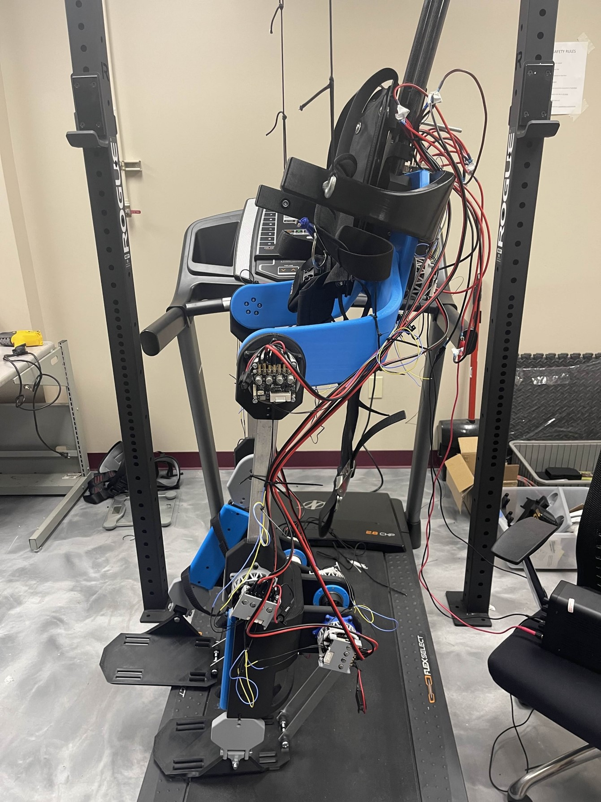
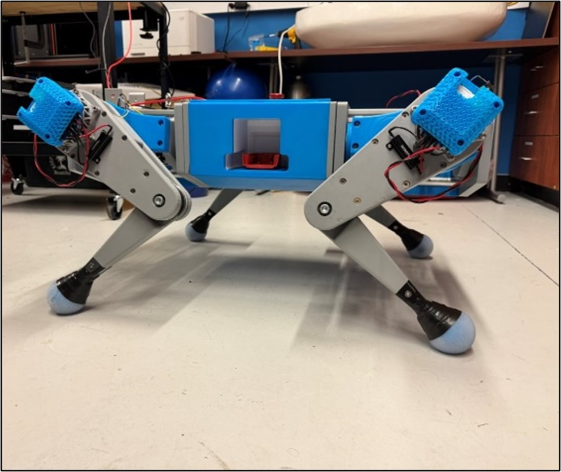
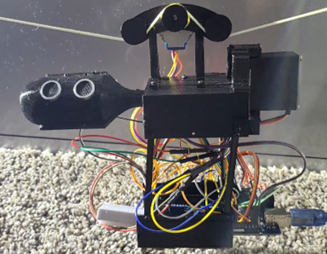
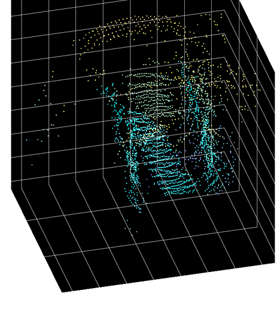
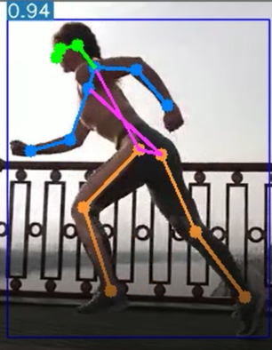
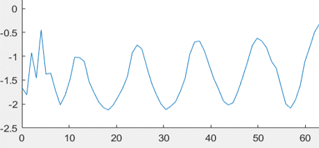

Mechanical Engineering Graduating December 2024, B.S.
Hector Exoskeleton

18 DOF full body exoskeleton with assistive mobility capabilities. Built from the ground up, the shoulder joint features a unique 3-motor design for full degrees of freedom.
Key Achievements
Tested knee movement and hip elevation
Verified torque, speed constraints, and cooling
Electronics powered by Milwaukee M18 batteries
Integration of motor controllers and Raspberry Pi 4B
OpenMutt Quadruped
An open-source robotic quadruped featuring 12 DOF and a standalone simulation package.

Electrical Design
Powered by Milwaukee M18 drill batteries
features CAN bus as the primary communication protocol
MCU is a Latte Panda Delta 3 running Ubuntu 20.04
Software Design
Built around ROS Noetic package
Created URDF for Gazebo simulation
Developed nodes for data acquisition and motor control
Additional Projects
Interior Space Mapper

Instrumentation project using stepper motors, ultrasonic sensors, and MATLAB for data visualization.

Yolov7 Gait Analysis Package

Analyzed video of runners to determine joint angles and identify potential injuries.

Jet-Powered Skateboard
High school project controlled by Arduino Uno acting as an RC receiver.